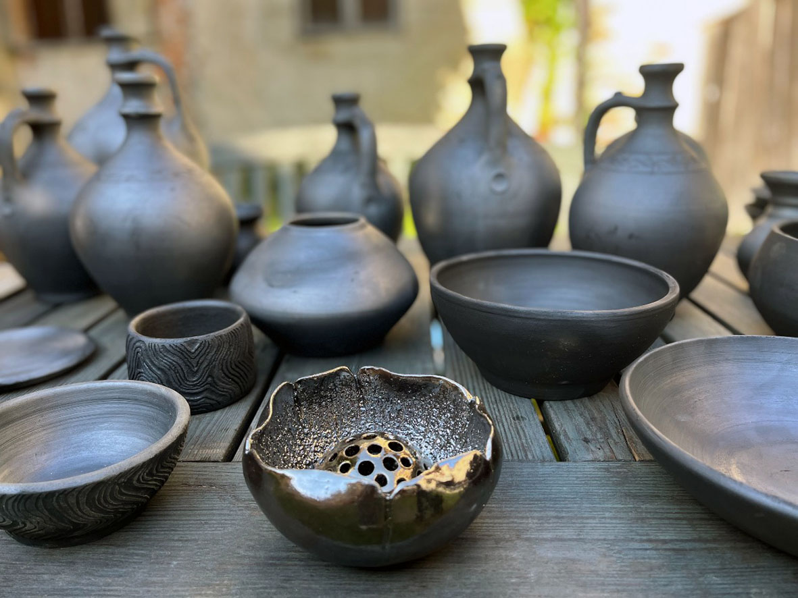

<!DOCTYPE html>
<html lang="sl">
<head>
  <meta charset="UTF-8">
  <meta name="description" content="Studio Glina
ica  glineni te
aji za vse generacije.">
  <meta name="keywords" content="glina, te
aji, ustvarjanje, keramika, medgeneracijski studio">
  <meta name="author" content="Barbara Centrih">
  <meta name="viewport" content="width=device-width, initial-scale=1.0">
  <title>Studio Glina
ica</title>
  <link rel="stylesheet" href="style.css">

<link href="https://cdn.jsdelivr.net/npm/lightbox2@2/dist/css/lightbox.min.css" rel="stylesheet">
<script src="https://cdn.jsdelivr.net/npm/lightbox2@2/dist/js/lightbox.min.js"></script>
</head>
<body>

<header>
  <div class="logo-title">
    <h1>Studio Glina
ica</h1>
    
  </div>

  <nav class="menu-grid">
    <a href="index.html" class="menu-button">Domov</a>
    <a href="tecaji.html" class="menu-button">Te
aji</a>
    <a href="galerija.html" class="menu-button">Galerija</a>
    <a href="kontakt.html" class="menu-button">Kontakt</a>
  </nav>
</header>

  <main class="container">
    <aside class="left-column">
      
      
    </aside>

    <article class="right-column">
      <h2>Dobrodoali v Studio Glina
ica</h2>
      <p>
       Studio Glina
ica je majhen, topel prostor, skrit v objemu zelenja in tiaine  ustvarjen za vse, ki si ~elijo pobegniti iz tempa vsakdana in se ponovno povezati z lastnimi rokami, ob
utki in materiali.
V tem medgeneracijskem mehur
ku se sre
ujejo otroci, starai, babice, dedki, prijatelji in radovedni posamezniki. Brez hitenja, brez ocen  le ti, glina in prostor, ki diha z vami.
Naaa filozofija
Tu se ne trudimo za popolne izdelke  tukaj praznujemo proces. Ko z rokami objamea glino, objamea tudi sebe.
      </p>
      <p>
       e te vle
e glina,

e ti zadiai zemlja pod prsti,

e bi rad oblikoval nekaj samo svojega  potem si tukaj doma.

      </p>
      <a href="tecaji.html" class="cta-button">Prijavi se na te
aj!</a>
      

      <div class="video-container">
       <iframe width="560" height="315" src="https://www.youtube.com/embed/-YCGK33c0xs?si=z-DJV19pxdqjJNvf" title="YouTube video player" frame="0" allow="accelerometer; autoplay; clipboard-write; encrypted-media; gyroscope; picture-in-picture; web-share" referrerpolicy="strict-origin-when-cross-origin" allowfullscreen></iframe>
      </div>
    </article>
  </main>

 <footer>
  <p>&copy; 2025 Studio Glina
ica · Barbara Centrih</p>
</footer>

</body>
</html>